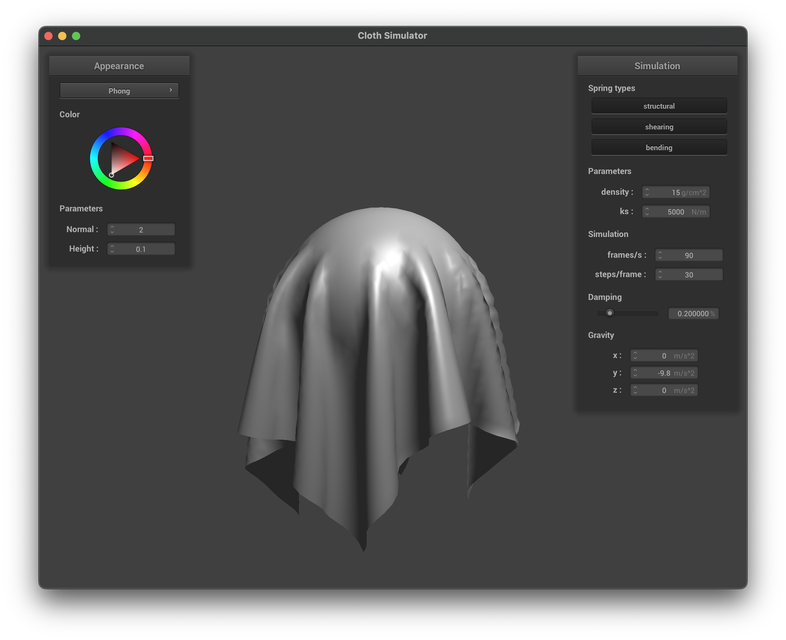

In this project, I implemented a comprehensive cloth simulation and rendering system that combines physics-based animation with advanced graphics techniques. The physics component uses a mass-spring system with structural, shearing, and bending springs to simulate cloth dynamics, while incorporating collision detection through spatial hashing for efficient self-collisions and object interactions. On the graphics side, I developed a suite of shaders including Blinn-Phong lighting, texture mapping, bump mapping, displacement mapping, and environment-mapped reflections, each demonstrating different approaches to achieving realistic material appearances. Through this implementation, I gained deep insights into the interplay between physical simulation and graphics rendering, particularly how parameters like spring constants and mesh density affect both the physical behavior and visual quality of the cloth. The project highlighted the fascinating balance between computational efficiency and visual realism in computer graphics, showing how different techniques can be combined to create convincing real-time simulations that are widely used in modern games and visual effects.
Part 1: Masses and springs
Cloth Implementation
The cloth simulation uses a mass-spring system where the cloth is discretized into a grid of point masses connected by springs.
The implementation creates an evenly spaced num_width_points x num_height_points grid of point masses spanning the cloth's width and height.
For horizontal orientation, point masses vary in the xz-plane with a fixed y-coordinate of 1.0, while vertical orientation varies in the xy-plane with a small random z-offset for stability.
Three types of springs connect these masses: structural springs link adjacent masses horizontally and vertically, shearing springs connect diagonal neighbors, and bending springs span two masses apart in both directions.
All constraints
No shearing constraints
Only shearing constraints
Part 2: Simulation via numerical integration
Spring Constant (ks)
Low ks: Creates stretchy, elastic behavior with exaggerated deformations. Cloth behaves like rubber, bouncing and waving significantly before settling.
High ks: Results in stiff, rigid cloth that maintains shape but moves more abruptly. Quickly reaches equilibrium with minimal stretching.
Low ks
High ks
Density
Low density: Creates lightweight cloth that responds quickly to forces but may appear unrealistic. Settles rapidly with minimal draping.
High density: Produces heavy, well-draped appearance with pronounced gravitational effects. Shows more stretching under its own weight and slower movement.
Low density
High density
Damping
Low damping: Exhibits persistent oscillations and ripples, taking longer to settle. Suitable for light, flowing fabrics.
High damping: Quickly stabilizes with minimal secondary motion. Can appear artificially stiff but useful for simulating thick materials.
Final resting state of pinned4
Part 3: Handling collisions with other objects
Sphere Collisions
Calculate vector from sphere's origin to point mass
Compare squared distance to sphere's squared radius
If distance is less than or equal to radius, collision has occurred
Normalize the direction vector to get unit vector from sphere center to point mass
Calculate tangent point on sphere surface: origin + direction * radius
Compute correction vector from last_position to tangent point
Apply correction scaled by (1-friction) to maintain energy loss due to friction
Plane Collisions
Calculate signed distances from plane to both current and last positions
If signs differ (product is negative), point mass has crossed plane
Calculate intersection point using ray-plane intersection
Add small offset in normal direction to prevent numerical issues
Apply friction-scaled correction to move point mass back
Spring Constant (ks) Analysis
Cloth resting on sphere with ks=500
Cloth resting on sphere with ks=5000
Cloth resting on sphere with ks=50000
ks = 500 (Low):
Cloth appears very stretchy
Significant deformation around sphere
Less accurate representation of fabric behavior
ks = 5000 (Default):
Balanced behavior between rigidity and flexibility
Natural-looking draping over sphere
Realistic cloth-like behavior
ks = 50000 (High):
Very stiff cloth behavior
Maintains shape more rigidly
Less natural draping but better shape preservation
Cloth resting on plane
Part 4: Handling self-collisions
1. Spatial Hashing
A function hash_position maps a 3D point mass position pos to a unique float key.
This key represents a specific 3D box volume in the simulation space.
The space is partitioned into a grid of 3D boxes with dimensions w = 3 * width / num_width_points, h = 3 * height / num_height_points, and t = max(w, h).
The function calculates the integer grid indices (x_box, y_box, z_box) corresponding to pos by dividing the coordinates by the box dimensions and taking the floor (floor(pos.x / w), etc.).
These indices are combined into a unique float key (e.g., x_box + y_box * 1000.0f + z_box * 1000000.0f).
2. Building the Spatial Map
At the beginning of each simulation step (specifically, before collision checks), the build_spatial_map function is called.
It first clears the existing hash map (map), which stores float keys mapped to vector<PointMass *> lists.
It then iterates through all point masses in the cloth.
For each point mass, it computes its hash key using hash_position.
It adds a pointer to the point mass into the vector associated with that key in the map. If the key doesn't exist, a new vector is created.
3. Self-Collision Check
For each point mass pm, the self_collide function is called.
It retrieves the hash key for pm's position.
It looks up the corresponding vector of potential collision candidates (other point masses in the same 3D box) from the map.
It iterates through these candidates:
It skips checking collision with the point mass itself (&pm == candidate).
It calculates the distance between pm and the candidate.
If the distance is less than the threshold 2 * thickness, a collision is detected.
A correction vector is calculated to push pm away from the candidate, aiming for a separation distance of exactly 2 * thickness. The vector points from the candidate to pm.
This correction vector is added to a total_correction accumulator, and a correction_count is incremented.
After checking all candidates in the bin, if correction_count > 0, the average correction (total_correction / correction_count) is computed.
This average correction is scaled down by simulation_steps (to prevent excessive movement in one step) and added to pm's position.
Self-Collision Behavior Documentation
Initial self-collision as the cloth begins to fold
Cloth folding further onto itself, demonstrating self-collision handling preventing intersection
Cloth settled on the plane, showing the final folded configuration maintained by self-collision forces
Density
Low Density: The cloth is lighter and falls more slowly, potentially leading to gentler folds and less pronounced self-collision effects initially. It might flutter or ripple more before settling.
High Density: The cloth is heavier, falls faster, and collapses more dramatically. This can lead to more forceful self-collisions and potentially deeper, more compact folds when resting.
Low density
High density
Spring Constant (ks)
Low ks: The cloth is very stretchy. During self-collision, it might deform significantly upon contact before the repulsive force pushes points apart. Folds might appear softer and less defined. The overall shape might be less preserved as it collapses.
High ks: The cloth is stiffer. It resists deformation more upon self-contact. Folds will appear sharper and more defined. The cloth structure is better maintained during the collapse, leading to potentially less compact folding compared to low ks.
Low ks
High density
Part 5: Shaders
1. Shader Programs, Vertex, and Fragment Shaders
A shader program is a set of instructions executed on the GPU that defines how to process and render graphics. It consists of specialized stages that work together in the graphics pipeline.
Vertex Shaders: These execute first and process each vertex of a 3D model. They transform vertex positions from model space to screen space, calculate lighting vectors, and pass data (like position, normal, and texture coordinates) to the fragment shader through varying variables. Their main responsibility is geometry transformation and setup for lighting calculations.
Fragment Shaders: These run after the vertex data has been rasterized into fragments (potential pixels). They determine the final color of each pixel by implementing lighting models, sampling textures, and performing other material calculations. Fragment shaders receive interpolated data from the vertex shader and output the final color for each fragment.
The shaders work together in a pipeline: vertex shaders transform geometry and prepare data, then fragment shaders use this data to determine pixel colors. This division allows efficient processing, as vertex shaders run once per vertex while fragment shaders run once per fragment/pixel.
2. Blinn-Phong Shading Model
The Blinn-Phong model simulates how light interacts with surfaces by combining three lighting components:
Ambient Component: Represents indirect light that has bounced around the environment, providing base illumination even to areas not directly lit. This is a constant term that ensures no part of the object is completely black.
Diffuse Component: Simulates light that penetrates the surface slightly before reflecting equally in all directions. This component depends on the angle between the surface normal and light direction (n·l), creating the basic shading that gives objects their 3D appearance.
Specular Component: Represents light that reflects directly off the surface, creating highlights. It depends on the angle between the normal and half-vector (the normalized sum of the view and light directions). This is raised to a power to control the size of highlights, creating the appearance of shiny surfaces.
The complete model combines these components: L = ka*Ia + kd*(I/r²)*max(0,n·l) + ks*(I/r²)*max(0,n·h)^p
Ambient component only
Diffuse component only
Specular component only

All components
3. Texture Mapping
Texture mapping applies 2D images onto 3D surfaces to add detail without increasing geometry complexity. My implementation samples color data from a texture using UV coordinates that map each point on the 3D model to a corresponding point on the 2D texture.
Custom texture: Miya
4. Bump Mapping vs. Displacement Mapping
Bump Mapping: This technique creates the illusion of surface detail by perturbing surface normals based on a height map, without actually changing the underlying geometry. It calculates how the normal should change based on the rate of change in the height map, creating detailed lighting effects that make surfaces appear more complex than they are.
Displacement Mapping: This technique goes further by actually moving vertices along their normal direction based on the height map values. This creates real geometric detail that affects the silhouette of the model and creates accurate self-shadowing.
Comparison:
Bump mapping is more efficient as it only affects lighting calculations, not geometry
Displacement mapping creates actual geometric detail visible in silhouettes and shadows
Bump mapping looks less realistic at grazing angles where the lack of geometric detail becomes apparent
Displacement mapping's effectiveness depends heavily on mesh density
Bump mapping
Displacement mapping
When changing the sphere's coarseness:
With low resolution (-o 16 -a 16), displacement mapping shows visible faceting as there aren't enough vertices to create smooth detail
With high resolution (-o 128 -a 128), displacement mapping creates much smoother detail that more accurately represents the height map
Bump mapping looks similar at both resolutions since it doesn't change the geometry, only the lighting calculations
Low resolution (-o 16 -a 16)
High resolution (-o 128 -a 128)
5. Mirror Shader
The mirror shader simulates perfect reflection by calculating the reflection of the view vector across the surface normal and using this reflected direction to sample an environment cubemap. This creates the illusion that the object is reflecting its surroundings.